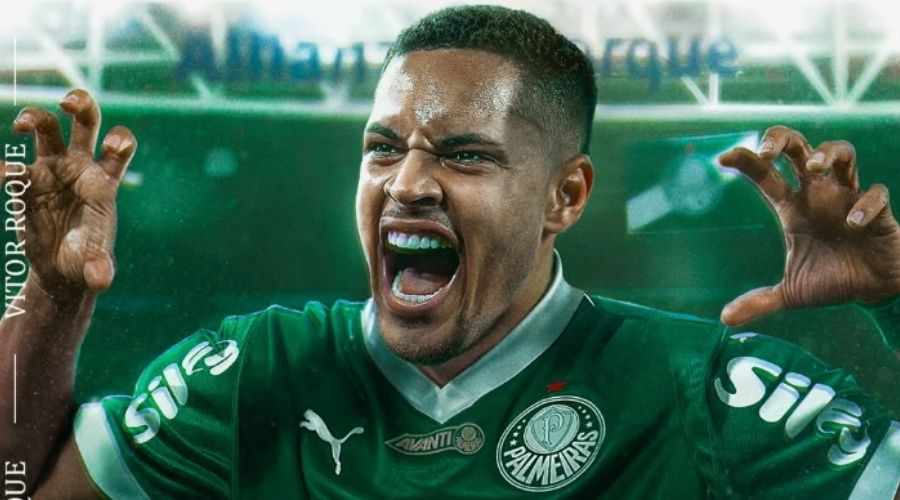
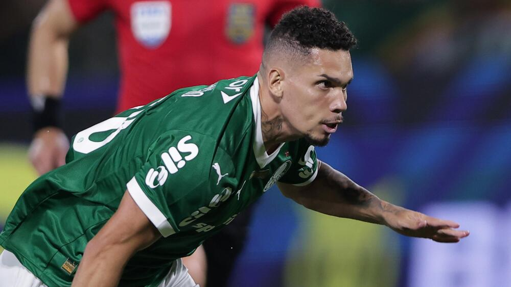
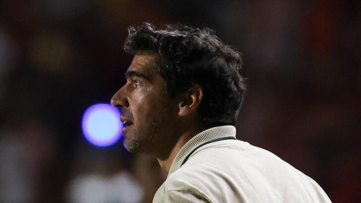

Este site é dedicado a todos os torcedores do Palmeiras, trazendo informações sobre o time, jogadores e muito mais.
Paulinho acaba de fazer estreia em jogo contra o Corinthians.
Felipe Anderson "destrava" e começa a render bem em jogos.

Posição: Atacante
Idade: 19 anos

Posição: Ponta-Esquerda/Atacante
Idade: 24 anos
Novos reforços chegam ao elenco do Verdão: Paulinho e Vitor Roque! Duas grandes contratações

Idade: 46 anos
Fernando Diniz é o atual técnico do Palmeiras, conhecido por seu estilo de jogo ofensivo e inovador.